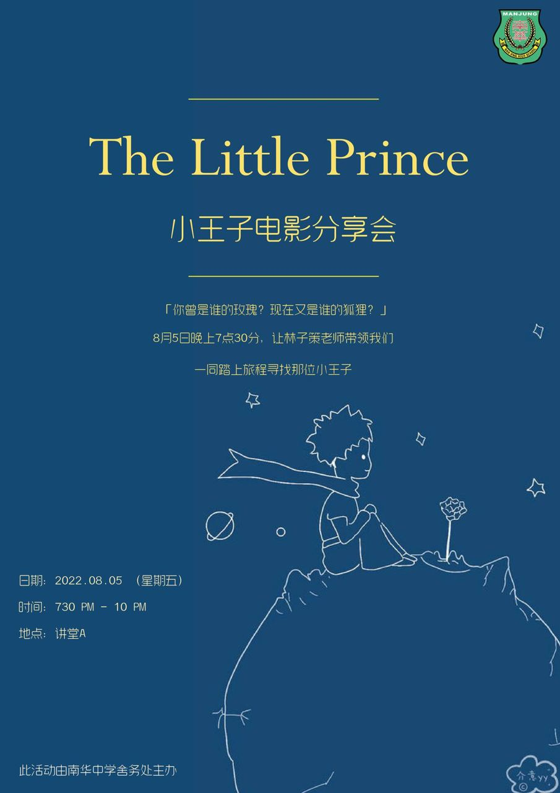

电影分享会 ①
电影分享会 ①
Le Petit Prince 小王子
日期：05-08-2022（星期五）
时间：7.30pm - 10.00pm
地点：南华独中讲堂 A
活动简介：
《小王子》的故事大家想必都耳熟能详，可是飞行员和小王子分离之后，故事接下来会怎么发展呢？小王子之后的旅程是怎样的呢？也许，这部电影可以给出一个答案。这部《小王子》电影并不只是单纯的将原著故事呈现在银幕上，反而是把焦点放在了原著故事的后续，并对原著进行了改写。
在这部电影中，原著内容时不时穿插其中，借由主角——一名小女孩的阅读过程慢慢呈现在我们眼前。原本以为只是幻想的小王子故事随著小女孩遇到的挫折开始与现实混淆，最后小女孩为了得到一个答案而踏上了旅途。
我们将与电影中的小女孩一起阅读小王子的故事，共同经历她遇到的挫折，并跟随她踏上寻找答案的旅途。而这段旅行的导游则是由林子策老师老师担当，希望可以让寄宿生们见证这段旅行的终点。
#电影分享会 #舍务处 #小王子
#南华独中 #曼绒 #实兆远
